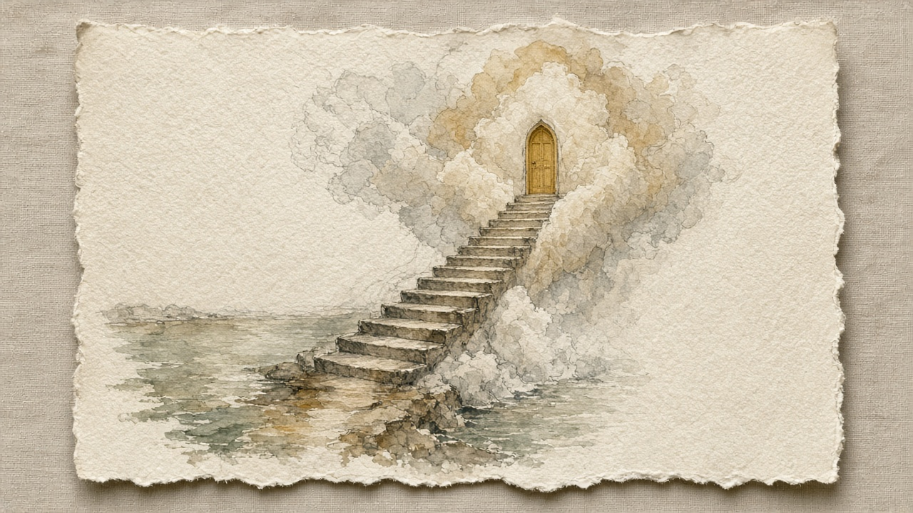

Available · one of one
Study for A Staircase for the Lake to Climb
Made for NB-2026-004 · Lisbon · 38.72°N · DREAM
Made the week after the Lisbon sitting, before the canvas was stretched. The door was gold from the first wash.
- Medium
- Watercolor and graphite
- Support
- Deckled cotton paper
- Size
- 11 × 14 in
- Year
- 2026
- Edition
- One of one
- Price
- USD 950